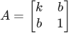
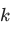
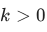
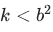
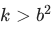
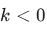
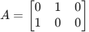

Home / Past papers / MLF Quiz 2 / this paper
Machine Learning Foundations 06 Apr 26 - 12 Apr 2026
Elapsed 00:00
Consider a vector  such that
such that  . Let
. Let  , where
, where  is the identity matrix. Which of the following is true?
is the identity matrix. Which of the following is true?
such that . Let , where is the identity matrix. Which of the following is true? is Hermitian and unitary.
is Hermitian and unitary.- is Hermitian but not unitary.
- is unitary but not Hermitian.
- is neither Hermitian nor unitary.
If is a  matrix with eigenvalues
matrix with eigenvalues  and
and  , what is det
, what is det  ? Note: det denotes the determinant.
? Note: det denotes the determinant.
is a matrix with eigenvalues and , what is det ? Note: det denotes the determinant.


Let
 be a Hermitian matrix. Which of the following options is correct for the values of
be a Hermitian matrix. Which of the following options is correct for the values of  and
and  ?
?
be a Hermitian matrix. Which of the following options is correct for the values of and ?


Let
for which the matrix is positive-definite.

. Find the condition on
and for which the matrix is positive-definite.
and


and- and
Which of the following represents the Taylor series expansion up to the third degree term of
 around
around  ?
?
around ?


If is a real matrix of shape  , which of the following is/are true?
, which of the following is/are true?
is a real matrix of shape , which of the following is/are true? is a positive semi-definite matrix.
is a positive semi-definite matrix. is a positive semi-definite matrix.
is a positive semi-definite matrix.- is positive semi-definite if and only if is a symmetric matrix.
- is positive semi-definite if and only if is a square matrix.

Consider the following matrix for  :
:
 Which of the following options is/are correct?
Which of the following options is/are correct?
:
Which of the following options is/are correct? is unitary for all real values of
is unitary for all real values of  other than
other than  .
.- is unitary for
 .
. - is unitary for
 .
. - If , then all eigenvalues of satisfy
 .
. - If is any non-zero real value, then all eigenvalues of satisfy .
Consider a function  whose graph is shown below.
whose graph is shown below.  and
and  correspond to local minima of
correspond to local minima of  .
.
 We run two separate instances of gradient descent with the same learning
We run two separate instances of gradient descent with the same learning  but different initial points. (1) Starting from the point
but different initial points. (1) Starting from the point  (2) Starting from the point
(2) Starting from the point  Assume that
Assume that  and are very small positive quantities. Which of the following is/are true if we run gradient descent for a large number of iterations?
and are very small positive quantities. Which of the following is/are true if we run gradient descent for a large number of iterations?
whose graph is shown below. and correspond to local minima of .
We run two separate instances of gradient descent with the same learning but different initial points. (1) Starting from the point (2) Starting from the point Assume that and are very small positive quantities. Which of the following is/are true if we run gradient descent for a large number of iterations?- Instance (1) will converge to the point
- Instance (2) will converge to the point
- Both instances (1) and (2) will converge to
- Both instances (1) and (2) will converge to
- Instance (1) will not converge to , but will diverge to negative infinity
- Instance (2) will not converge to , but will diverge to infinity
Inscript is a real matrix of shape  with the following singular values:
with the following singular values:  . Find the rank of .
. Find the rank of .
is a real matrix of shape with the following singular values: . Find the rank of .Consider the matrix
.

. Find the sum of all the singular values of .A function  is minimized using the gradient descent algorithm. Let
is minimized using the gradient descent algorithm. Let  denote the value of
denote the value of  at which
at which  is minimized.Starting from the initial point
is minimized.Starting from the initial point  , one iteration of gradient descent is performed with a learning rate of
, one iteration of gradient descent is performed with a learning rate of  . If
. If  denotes the point obtained after this iteration, find the value of
denotes the point obtained after this iteration, find the value of  . Enter the answer correct to one decimal place.
. Enter the answer correct to one decimal place.
is minimized using the gradient descent algorithm. Let denote the value of at which is minimized.Starting from the initial point , one iteration of gradient descent is performed with a learning rate of . If denotes the point obtained after this iteration, find the value of . Enter the answer correct to one decimal place.Comprehension passage - the questions below it refer to this
Consider the following dataset in 
 Run PCA on this dataset. Based on the above data, answer the given subquestions.
Run PCA on this dataset. Based on the above data, answer the given subquestions.If
 is the covariance matrix of the dataset, find
is the covariance matrix of the dataset, find  . Enter the nearest integer as your answer.
. Enter the nearest integer as your answer.
is the covariance matrix of the dataset, find . Enter the nearest integer as your answer.Let  be the unit-norm eigenvector corresponding to the smallest eigenvalue of the covariance matrix. Find the variance of the dataset along the direction . Enter the nearest integer as your answer.
be the unit-norm eigenvector corresponding to the smallest eigenvalue of the covariance matrix. Find the variance of the dataset along the direction . Enter the nearest integer as your answer.
be the unit-norm eigenvector corresponding to the smallest eigenvalue of the covariance matrix. Find the variance of the dataset along the direction . Enter the nearest integer as your answer.